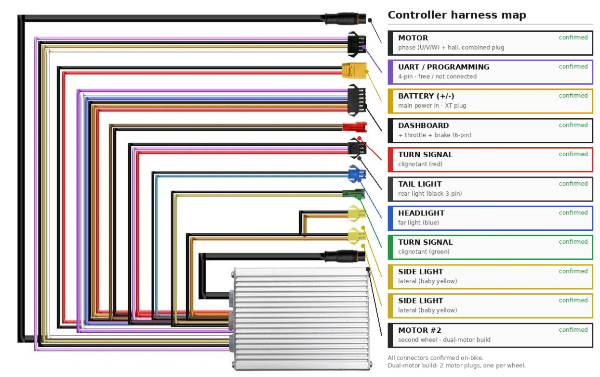

Construire un robot autonome à entraînement différentiel (skid-steer) à partir de 2 trottinettes Ecoxtrem M41. Chaque trottinette doit être pilotée intégralement par une carte STM32, sans intervention humaine sur le guidon, en reproduisant toutes les fonctions :
| Fonction | Support physique | État |
|---|---|---|
| Accélération / vitesse moteur | Fil gris/blanc (throttle analogique) | ✔ FAIT |
| Boucle fermée de vitesse (régulation) | Throttle + télémétrie bleu | ✔ FAIT |
| Frein | Fil violet (bus commandes) | ✔ FAIT |
| Feu / phare | Fil violet | ✔ FAIT |
| Mode S / D (Sport / Drive) | Fil violet | ✔ FAIT |
| Gear 1 / 2 / 3 | Fil violet | ✔ FAIT |
| Clignotants gauche / droit | Fil violet | ✔ FAIT |
| Lecture vitesse (feedback) | Fil bleu (télémétrie) | ✔ FAIT |
| Téléopération clavier | PC → STM32 (USB série) | ✔ FAIT (tools/teleop.py) |
| Marche arrière | Relais d'inversion (à venir) | ✘ À FAIRE |
| 2e trottinette + différentiel | 2e STM32 / coordination | ✘ À FAIRE |
La trottinette n'a pas un seul bus : elle a 3 canaux de signal distincts entre l'afficheur (guidon) et le contrôleur (ESC), plus l'alimentation.
| Fil | Rôle | Nature du signal | Sens |
|---|---|---|---|
| Gris / blanc | Throttle (accélérateur) | Analogique 0,8 V (repos) → 3,2 V (plein gaz) | guidon → contrôleur |
| Violet | Bus de commandes (frein, feu, mode, gear, clignotants) | Série numérique 9600 8N1, trame 20 octets @10/s, niveau 5 V open-drain | afficheur → contrôleur (unidirectionnel) |
| Bleu | Bus de télémétrie (vitesse, état) | Série numérique 9600, trame 14 octets @10/s, header 0x02 | contrôleur → afficheur |
| Noir | Masse (GND) | 0 V de référence | commun |
| Rouge | Batterie +52 V | PUISSANCE | — |
| Orangé | +52 V commuté = ENABLE contrôleur | PUISSANCE | — |
L'afficheur du guidon a deux rôles qu'il a fallu séparer :
Carte : STM32 Nucleo F401RE. La navigation se fait par les numéros Dx du header Arduino (les étiquettes imprimées sur la carte).
| Étiquette Arduino | Pin STM32 réel | Connecté à | Fonction |
|---|---|---|---|
| D6 | PB10 | → R 1 kΩ → nœud gris/blanc | Throttle (PWM 3,3 V) + condo 10 µF, pull-down |
| A0 | PA0 | ← nœud gris/blanc | Relecture tension réelle du throttle (ADC 12 bits) |
| D8 | PA9 | ↔ fil bleu (tap) / violet côté afficheur selon montage | Lecture télémétrie (vitesse) — UART half-duplex matériel |
| D9 | PC7 | ← fil bleu (lecture parallèle) | Lecture télémétrie alternative (RX seul) |
| D10 | PB6 | → fil violet côté contrôleur | Injection des commandes (USART1 half-duplex open-drain) |
| GND | — | ↔ fil noir | Masse commune (obligatoire) |
| PC6 = D34 | PC6 | RIEN (morpho CN10) | ⚠️ PAS sur le header Dx — voir §5 (le bug !) |
PC6 parlait en réalité dans le vide. Voir la résolution complète §5.Trois liaisons relient la carte à la trottinette, chacune avec son conditionnement. Voici le schéma complet puis le pourquoi de chaque pièce.
STM32 filtre RC (lissage) TROTTINETTE
D6 (PB10) ──PWM 490 Hz──[ R 1 kΩ ]──┬──────────────────► fil GRIS/BLANC (côté CONTRÔLEUR)
(sortie throttle) │ = entrée throttle analogique
├──[ C 10 µF ]──┐
│ │
├──[ pull-down ]┤ (10 kΩ → 100 kΩ conseillé)
│ │
A0 (PA0) ◄── relecture tension ─────┘ │
(mesure le nœud réel) │
GND ─────────────────────────────────────────────┴──► fil NOIR (masse commune)
| Composant | Valeur | Rôle | POURQUOI ce composant |
|---|---|---|---|
| R série | 1 kΩ | 1re moitié du filtre RC | Le STM32 ne sort pas une tension continue : il sort un PWM (créneau 0/3,3 V à 490 Hz). Le contrôleur, lui, attend une tension analogique lisse comme celle d'une poignée. La résistance + le condo moyennent ce créneau en une tension continue ≈ rapport_cyclique × 3,3 V. |
| C (condensateur) | 10 µF | 2e moitié du filtre RC (lissage) | Il emmagasine/restitue la charge entre deux fronts du PWM → écrase l'ondulation. Constante de temps τ = R·C = 1 kΩ × 10 µF = 10 ms → fréquence de coupure ≈ 1/(2πRC) ≈ 16 Hz, très en dessous des 490 Hz du PWM : le créneau est fortement aplani, le contrôleur voit une tension propre. |
| Pull-down | 10 kΩ (→100 kΩ conseillé) | Référence basse + décharge | Donne un chemin de décharge au condo (la tension peut redescendre quand on lâche les gaz) et un état défini/fail-safe : si la carte se débranche, le nœud tombe vers 0. ⚠️ Trop faible (10 k) il « tire » le nœud et l'atténue (nœud ≈ 0,8 × commande) → passer à 100 kΩ pour exploiter toute la plage 0,8–3,2 V. |
| A0 (relecture) | — | Mesure de la tension réelle | Comme le filtre + le pull-down atténuent un peu, on relit le nœud avec l'ADC pour connaître la vraie tension appliquée et la corriger (sert aussi à la boucle PI). |
D10 (PB6) ──USART1 half-duplex, OPEN-DRAIN──► fil VIOLET (côté CONTRÔLEUR)
(le 5 V « haut » vient du pull-up INTERNE du contrôleur)
| Élément | Réglage | POURQUOI |
|---|---|---|
| Open-drain | setHalfDuplex() | Le violet est de la logique 5 V (niveau repos ≈ 5,04 V imposé par le contrôleur). Un STM32 sort 3,3 V : en push-pull il ne pourrait jamais faire un « 1 » propre à 5 V, et il se battrait contre le pull-up du contrôleur. En open-drain, la carte ne fait que tirer à 0 (le « 0 ») et relâche pour le « 1 » → c'est le pull-up 5 V interne du contrôleur qui remonte la ligne à 5 V. Niveaux logiques corrects sans aucune résistance externe. |
| 1 seul fil | half-duplex | Le bus violet est une liaison série sur un fil unique (TX et RX partagés). Le mode half-duplex single-wire du STM32 le gère nativement. |
| Élément | Réglage | POURQUOI |
|---|---|---|
| Tap parallèle | on LIT, on ne coupe pas | Le bleu va du contrôleur vers l'afficheur. On se branche en dérivation (écoute) sans couper : ainsi l'afficheur continue de fonctionner (pas d'erreur E-06) et on lit la vitesse en parallèle. |
| TX factice hors ligne 5 V | RX sur PA11, jamais PC6 | Si le TX factice de l'UART tombe sur un pin porté à 5 V (la ligne violet), le push-pull 3,3 V se bat contre et casse la réception (0 octet). Le TX factice doit rester sur un pin libre. |
arduino-cli + core STMicroelectronics:stm32. FQBN : STMicroelectronics:stm32:Nucleo_64:pnum=NUCLEO_F401RE..bin sur le lecteur USB /media/manar/NUCLEO (mass-storage ST-Link, pas besoin de CubeProgrammer). Script : ./flash_stm32.sh <nom>./dev/ttyACM0 @ 115200 (ouvrir avec dtr=False, rts=False).Série 9600 8N1, trame de 20 octets répétée ~10 fois/s. Header 0x01. Trame au repos :
01 14 01 00 0F 80 1E 00 91 01 05 00 64 0C 01 AE 00 00 05 D2 │ │ │ │ │ └ [19] CHECKSUM = XOR des octets [0..18] │ │ │ └ [5] base 0x80 : bit 0x20 = PHARE/FEU │ │ └ [4] base 0x0F : bit 0x80=FREIN, bit 0x10=mode S↔D, nibble bas=GEAR (gear×5 : 5/A/F) │ └ [1] = 0x14 = 20 (longueur) [18] base 0x05 : bit 0x08=cligno DROIT, bit 0x10=cligno GAUCHE └ [0] = 0x01 (header — le bleu utilise 0x02 : bus différent)
| Commande | Octet | Bit / valeur | Vérif checksum |
|---|---|---|---|
| Frein | [4] | 0x80 (0F→8F) | D2→52 ✔ |
| Mode S ↔ D | [4] | 0x10 (0F→1F) | →C2 ✔ |
| Gear 1/2/3 | [4] | nibble bas = 5 / A / F | D8 / D7 ✔ |
| Phare / feu | [5] | 0x20 (80→A0) | →E2 ✔ |
| Clignotant droit | [18] | 0x08 (05→0D) | →DA ✔ |
| Clignotant gauche | [18] | 0x10 (05→15) | ✔ |
Le throttle n'est PAS dans le violet (accélérer ne change aucun octet) → confirme qu'il reste analogique sur gris/blanc.
Série 9600, trame de 14 octets @10/s. Header 0x02. Trame roue arrêtée :
02 0E 01 20 90 20 80 00 EA 60 00 20 80 37 │ │ │ └──┬──┘ └ [13] CHECKSUM = XOR [0..12] │ │ │ [8][9] = PÉRIODE vitesse (big-endian). EA60 = 60000 = ARRÊT │ │ └ [4] octet d'état/flags │ └ [1] = 0x0E = 14 (longueur) └ [0] = 0x02 (header télémétrie)
Calibration vitesse : vitesse_mph = 2520 / période([8][9]). Validé sur l'afficheur (2,0 V → 126 → 20 mph ; 1,6 V → 360 → 7 mph). ⚠️ L'ancienne valeur SPEED_K=667 des docs est fausse pour cette trottinette.
Cette section retrace les blocages dans l'ordre, avec la cause réelle et la solution. Les encadrés bleus marquent tes idées de manip qui ont fait avancer ou débloquer le projet.
Symptôme : commande 1,5 V → roue immobile.
Cause : le STM32 sort 3,3 V (vs 5 V de l'Arduino) ; avec la résistance + pull-down, le nœud n'atteint que ~0,8 × la commande. Il faut nœud > ~1,3–1,4 V pour démarrer.
Solution : commander plus haut (≥ 2,0 V). Amélioration possible : pull-down 10 k → 100 k pour réduire l'atténuation. RÉSOLU.
Cause : 0 V est interprété comme une faute capteur Hall de la poignée.
Solution : repos = 0,8 V jamais 0 V, + rampe douce (0,5 V/s) au lieu d'un saut. RÉSOLU.
Symptôme : dès qu'on coupait le violet pour s'insérer, l'afficheur passait en E07 et le contrôleur se mettait en sécurité (roue immobile). Relais, émulation, injection : tout échouait. Ce mur a duré des jours.
Résultat sur le bon pin (PB6 = D10), firmware violet_d10 :
| Commande injectée sur D10 | Effet observé | Confirmé |
|---|---|---|
| Frein = ON | La roue S'ARRÊTE | oui ✔ |
| Frein = OFF + throttle | La roue repart | oui ✔ |
| Feu = ON | Le phare s'allume | oui ✔ |
| Clignotant droit | Clignote | oui ✔ |
| Clignotant gauche | Clignote | oui ✔ |
Conclusion : sur le bon pin, le contrôleur OBÉIT au violet injecté. Frein / feu / mode / gear / clignotants sont tous pilotables depuis la carte. MUR RÉSOLU.
Pourquoi ça marche maintenant (mécanisme) : ce qui verrouillait avant, ce n'était PAS la coupure batterie en soi — c'était qu'à froid le contrôleur ne voyait aucun violet valide (l'injection partait sur le mauvais pin PC6, dans le vide). Depuis que le STM injecte des trames violet correctes sur D10/PB6 dès le démarrage, le contrôleur s'arme directement à partir de la carte à chaque boot — il n'a plus besoin du violet natif de l'afficheur pour s'armer. Donc le « il s'habitue » se traduit techniquement par : le STM fournit lui-même la trame d'armement valide à chaque allumage.
Cause : un TX factice avait été mis sur PC6, qui porte la ligne violet tirée à 5 V ; le TX push-pull 3,3 V se battait contre → réception cassée. Solution : déplacer le TX factice hors de PC6 (HardwareSerial blueUart(PC7, PA11)). RÉSOLU.
Le flash par mass-storage est parfois capricieux (ancien firmware encore en cours). Solution : reflasher et vérifier la bannière série avant tout test. CONTOURNÉ.
| Fichier | Rôle | État |
|---|---|---|
firmware_stm32/violet_d10 | FIRMWARE PRINCIPAL : injection violet sur PB6/D10 (frein/feu/mode/gear/clignos) + throttle D6 | ✔ marche |
firmware_stm32/throttle_clean | Throttle seul propre (repos 0,8 V, rampe) — récupération scooter | ✔ marche |
firmware_stm32/throttle_pi | Boucle fermée PI de vitesse (c<mph> tient la vitesse) | ✔ marche |
firmware_stm32/bus_watch / bus_sniff2 | Lecture/tap des bus violet + bleu (décodage) | ✔ marche |
tools/teleop.py | Téléopération clavier (drive/frein/feu/mode/clignos/gear) | ✔ prêt |
tools/pi_keyboard_stm32.py | Clavier de test de la boucle PI | ✔ |
violet_emul, violet_ctrl, violet_diag, relais… | Anciens firmwares d'injection sur PC6 (mauvais pin) | à corriger PC6→PB6 si réutilisés |
tools/teleop.pyÀ lancer dans un vrai terminal (le clavier doit être lu en direct) :
cd ~/Téléchargements/shadow-scooter-control-v2/shadow-scooter-control python3 tools/teleop.py
| Touche | Action | Touche | Action |
|---|---|---|---|
a / z | accélérer / ralentir (±0,1 V) | f | feu (bascule) |
x | repos (0,8 V) | s / d | mode S / mode D |
ESPACE | frein (bascule) | g / h | cligno gauche / droit |
1/2/3 | gear | p | quitter (remet le repos) |
Rappel : le paste dans un terminal Linux = Ctrl+Shift+V (pas Ctrl+V).
| Fonction robot | Voie | Pin STM32 |
|---|---|---|
| Accélération | Throttle analogique (gris/blanc) | D6 (PB10) + relecture A0 |
| Régulation de vitesse | Boucle PI (throttle ↔ bleu) | D6 + D8/D9 |
| Frein / Feu / Mode / Gear / Clignos | Injection violet | D10 (PB6) |
| Vitesse (feedback) | Lecture télémétrie bleu | D8 (PA9) ou D9 (PC7) |
| Masse | commune | GND ↔ noir |
teleop.py et valider tous les contrôles enchaînés (en cours).docs/05). Seule fonction motrice manquante.violet_emul / relais.dtr=False, rts=False.